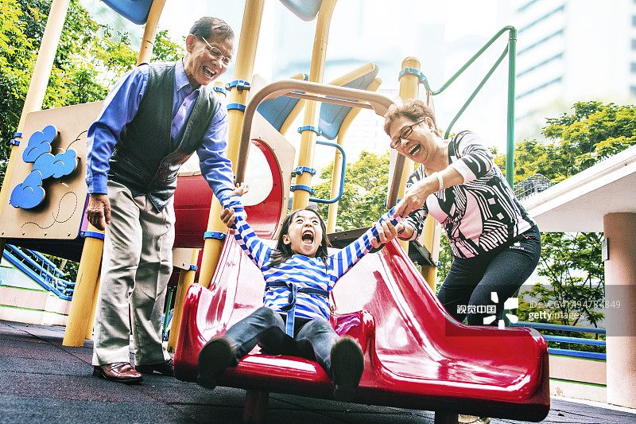

提升家庭教育“三力”
【来源】：互联网
《中华人民共和国家庭教育促进法》明确规定：父母或者其他监护人应当树立家庭是第一个课堂、家长是第一任老师的责任意识，承担对未成年人实施家庭教育的主体责任，用正确思想、方法和行为教育未成年人养成良好思想、品行和习惯。这一法规的出台，进一步厘清了家庭、社会和政府在家庭教育中的职责，为依法开展家庭教育提供了保障。 《礼记·大学》有云：“所谓治国必先齐其家者，其家不可教而能教人者，无之。”家庭教育是教育的开端，养育孩子是家庭教育的基本功能和责任，家长的教育观念、教育方式和教育能力与家庭教育的成败息息相关。近年来，随着现代社会信息化、网络化和数字化的发展以及社会变迁和知识转型，对家庭教育也提出了更高的要求。成功的家庭教育须以提升家长素养为抓手，要树立科学的家庭教育理念，增强家庭教育胜任力、理解力和赏识力。
童本，建构先进家庭教育理念
儿童观与教育理念密切相关，儿童观影响教育理念的建构，进而影响教育方式的选择和实施。有教育学者认为，儿童观是指关于儿童的基本看法，主要涵盖儿童身心发展规律、特点和心理发展动力等一系列问题的一般性认识和由此形成的对儿童的特定期望。儿童观也经历了几层发展演变：历史儿童观将儿童视为“小大人”，认为儿童与成人无根本性区别，主张以成人的教育方式对待儿童。法国思想家卢梭、德国教育家福禄贝尔、捷克教育家夸美纽斯等自然主义儿童观教育家认为，儿童有异于成人的心智发展规律和天性，教育活动要关注儿童的个性，因材施教。而美国心理学家罗杰斯等人本主义儿童观心理学家关注儿童的动机和主观能动性，主张教育要指向儿童的创造性。

家庭教育理念是人在家庭教育过程中所信奉和秉持的基本观念，是教育理念的有机组成部分。有学者将家庭教育理念主要总结为家庭为基、做人为魂、生活为根、儿童为本、家长主体、协同育人等六大方面，涵盖了家庭教育的不同主体，提出了家庭教育遵循的基本原则。家长须洞悉儿童观发展演变趋势，树立以家庭为基、儿童为本的家庭教育理念，在尊重儿童天性、注重儿童个性的基础上，结合社会性发展需求，开展促进儿童全面发展的家庭教育活动。
胜任，科学实施教育活动
胜任家庭教育是家长教育儿童的基础。随着我国社会转型速度加快，传统家庭结构和功能发生巨变，家庭教育存在的问题日渐凸显，不少父母缺乏正确的儿童观、成才观，存在重智轻德、教育方式简单粗暴、忽视儿童身心发展规律等问题。正如《种树郭橐驼传》所述，“爱之太恩，忧之太勤。旦视而暮抚，已去而复顾。甚者爪其肤以验其生枯，摇其本以观其疏密，而木之性日以离矣”。 故而，时代呼唤家长系统学习家庭教育知识，不断提升家庭教育胜任力，通过运用正确的方法和自身的人格魅力引导子女健康成长。一是依据儿童个体阶段性发展规律，适时调整家庭教育内容和方法。二是遵循儿童身心发展由低级到高级、由简单到复杂的连续性规律，运用儿童思维发展特点，根据最近发展区理论，适时提供学习辅助，支持他们认知技能和非认知技能的发展。三是依据儿童身心发展的不平衡性规律，关注身心发展的关键期和危机期，支持陪伴孩子度过危机期。四是遵循儿童身心发展的互补性规律，依据不同个体的差异性，扬长避短，长善救失，激发儿童自我发展的效能感。五是遵循儿童发展的个体差异，因材施教。
理解，走近儿童的意义世界
理解儿童是科学对待儿童的前提。现代形态的教育学是以儿童为起点、为目的、为本位的。儿童意义世界的建构主要受其所生活的经验指引，儿童所拥有的生活体验塑造其意义世界的建构。成人只有尽可能地走近儿童的生活世界，感同身受地理解儿童生活的点点滴滴，理解他们的喜悦与悲伤，才能理解他们的意义世界。 因此，只有掌握理解儿童的基本方式，才能真切深入了解儿童，继而为实施教育实践活动奠定基础，提供支撑。要做到走近儿童的意义世界，提升理解儿童的能力，首先要以儿童的视角认识儿童，如其所是地认可他们不同于成人的独特性；其次要以儿童伙伴、朋友的姿态，俯下身来，通过观察、聆听去洞悉儿童对生活的感受和体验，以在场的共情能力关切儿童的生活世界，理解儿童的意义世界；再其次要鼓励儿童自我接纳，接受自己在形象、情感、思维等方面的与众不同，引导儿童在自我接纳的基础上与他人开展有意义的对话和交流，实现与生活世界的对话。
赏识，激发儿童的发展潜能
赏识儿童是激发儿童发展潜能的契机。赏识力是积极的内在潜能，是与人类对价值、意义和愿景的诉求相互联系的，由重新构架、肯定正面因素和洞悉未来是如何从当前展开的三个要素构成。 在运用赏识力激发儿童潜能方面，家长可以通过以下途径开展教育活动：一是以积极乐观的心理和认知，看待儿童发展的现状，以新的视角审视儿童在智商、情商和思维风格等方面的差异，重新构架发展路径，以新的思路和实践指导家庭教育活动。二是将儿童作为行为的实践主体，营造温馨、积极的情感环境，以理解儿童、尊重儿童、欣赏儿童的态度正确看待儿童的发展现状，通过基于信任的沟通，科学运用适合不同年龄特点的激励方式，激发儿童认知和学习的积极性、主动性，促成儿童自我发展和自我实现。三是以发展的视角看待儿童的当下和未来，承认儿童发展的可塑性，通过将当前发展因素和预期实现的目标相联系，通过鲜活的教育实践活动，促成儿童未来终极发展目标的达成。
浏览量：33

- 联系
我们

工作日：
早9:00-晚18:00
杨老师：
400-888-8888